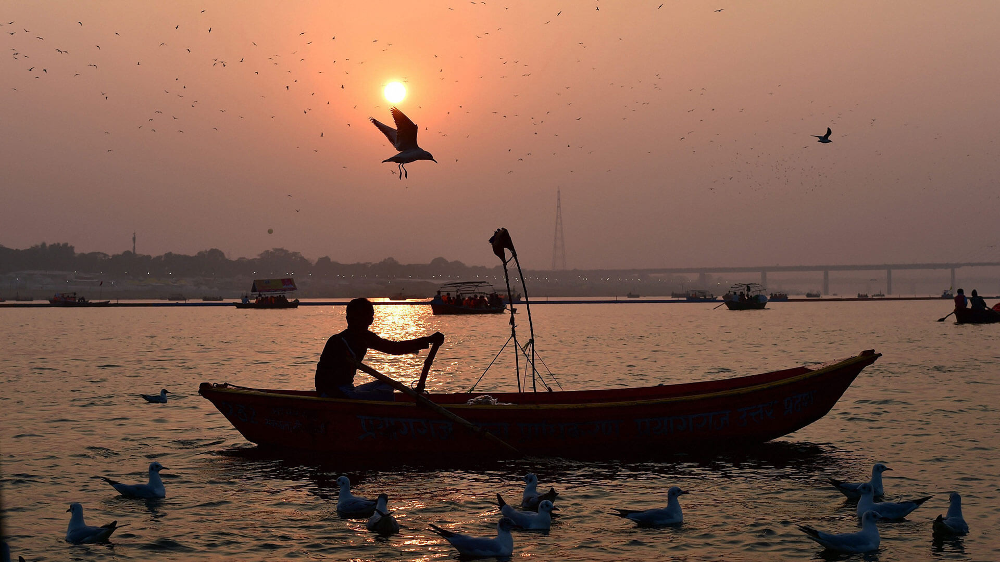

Thriveni Sangamam
Thriveni Sangamam is situated at a distance of 64 km from Pathanamthitta on way to Sabarimala and is the meeting point of the holy Pamba River that meets Manimala River and Achankovil River. It is a sacred place for the Hindus and pilgrims on way to Sabarimala Temple stop here and take a dip in the holy water to wash away their sins. It is a beautiful place with natural surroundings and millions of visitors come here to enjoy the beautiful landscape.
...
...